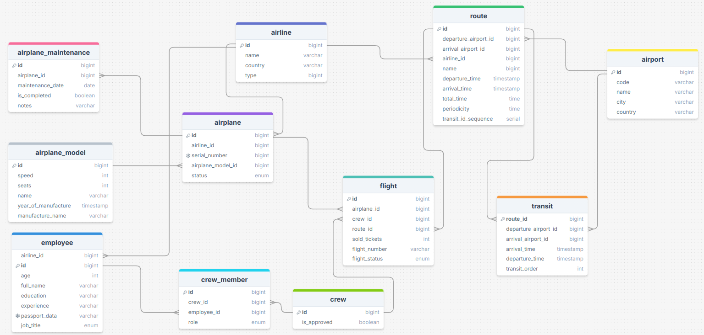

Отчет по лабораторной работе
Цель работы
Реализация серверной части приложения средствами django и djangorestframework
Задачи
- Реализовать модель базы данных средствами DjangoORM.
- Реализовать логику работу API средствами Django REST Framework (используя методы сериализации).
- Подключить регистрацию / авторизацию по токенам / вывод информации о текущем пользователе средствами Djoser.
Ход работы
1. Реализация моделей
Составлена следующая модель базы данных, которая реализована в models.py

2. Реализация функционала
serializers – отвечает за сериализацию данных. Добавили базовые сериализотры, для всех моделей и всех их полей.
Views – отвечает за функционал работы пользователя с ендпоинтами
-
AirlineViewSet - выводит полную информацию о каждой авиалинии. Ендпоинт: http://127.0.0.1:8000/api/airlines/
-
AirportViewSet - выводит полную информацию о каждом аэропорте. Ендпоинт:http://127.0.0.1:8000/api/airports/
-
def traffic(self, request, pk=None)- возвращает количество рейсов (вылетов и прилетов) для указанного аэропорта. Ендпоинт: http://127.0.0.1:8000/api/airports/{id}/traffic/ -
RouteViewSet: - выводит полную информацию о каждом маршруте. Ендпоинт: http://127.0.0.1:8000/api/routes/
-
def with_transits(self, request)- возвращает маршруты с указанием пересадок для каждого маршрута. Ендпоинт: http://127.0.0.1:8000/api/routes/with_transits/ -
def total_travel_time(self, request, pk=None)- вычисляет общее время в пути для указанного маршрута, включая пересадки. Ендпоинт: http://127.0.0.1:8000/api/routes/{id}/total_travel_time/ -
def load_analysis(self, request)- возвращает маршруты с их загруженностью (количество проданных билетов относительно доступных мест в самолетах). Ендпоинт: http://127.0.0.1:8000/api/routes/load_analysis/ -
TransitViewSet - выводит полную информацию о пересадках. Ендпоинт: http://127.0.0.1:8000/api/transits/
-
AirplaneModelViewSet - возвращает полную информацию о каждой модели самолета. Ендпоинт: http://127.0.0.1:8000/api/airplane_models/
-
AirplaneViewSet - возвращает полную информацию о каждом самолете. Ендпоинт: http://127.0.0.1:8000/api/airplanes/
-
def maintenance_history(self, request, pk=None)- возвращает полную историю технического обслуживания для указанного самолета. Ендпоинт: http://127.0.0.1:8000/api/airplanes/{id}/maintenance_history/ -
def stats(self, request)- возвращает статистику по самолетам для указанной авиалинии: общее количество самолетов, их статус и модели. Ендпоинт: http://127.0.0.1:8000/api/airplanes/stats/?airline_id={id} -
def availability(self, request)- проверяет, доступен ли самолет для указанного рейса. Ендпоинт: http://127.0.0.1:8000/api/airplanes/availability/?airplane_id={id}&departure_time={dep_time}&arrival_time={arr_time} -
AirplaneMaintenanceViewSet - возвращает полную информацию о каждом обслуживании самолета. Ендпоинт: http://127.0.0.1:8000/api/airplane_maintenance/
-
def scheduled_for_month(self, request)- возвращает самолеты, у которых обслуживание запланировано на указанный месяц. Ендпоинт: http://127.0.0.1:8000/api/airplane_maintenance/scheduled_for_month/?year={yyyy}&month={mm} -
EmployeeViewSet - выводит полную информацию о каждом работнике. Ендпоинт: http://127.0.0.1:8000/api/employees/
-
def by_experience(self, request)- возвращает список сотрудников с фильтрацией по опыту работы. Ендпоинт: http://127.0.0.1:8000/api/employees/by_experience/?min_experience={минимальный_опыт} -
def by_role(self, request)- возвращает список сотрудников авиалинии по указанной должности. Ендпоинт: http://127.0.0.1:8000/api/employees/by_role/?airline_id={id_авиалинии}&role={должность} -
CrewViewSet - возвращает полную информацию о каждом экипаже. Ендпоинт: http://127.0.0.1:8000/api/crews/
-
def flights(self, request, pk=None)- возвращает список рейсов, закрепленных за указанным экипажем. Ендпоинт: http://127.0.0.1:8000/api/crews/{id_экипажа}/flights/ -
def with_members(self, request)- возвращает список всех экипажей с подробной информацией о каждом члене. Ендпоинт: http://127.0.0.1:8000/api/crews/with_members/ -
CrewMemberViewSet - выводит полную информацию о членах каждого экипажа. Ендпоинт: http://127.0.0.1:8000/api/crew_members/
-
FlightViewSet - выводит полную информацию о каждом рейсе. Ендпоинт: http://127.0.0.1:8000/api/flights/
-
def nearest(self, request)- возвращает ближайшие рейсы для указанного аэропорта. Ендпоинт: http://127.0.0.1:8000/api/flights/nearest/?airport_code={код_аэропорта} -
def status_summary(self, request)- возвращает текущий статус рейсов (по состоянию на сегодня) с указанием количества рейсов в каждом статусе. Ендпоинт: http://127.0.0.1:8000/api/flights/status_summary/ -
def search(self, request)- возвращает рейсы, отфильтрованные по аэропорту отправления, аэропорту прибытия и дате. Ендпоинт: http://127.0.0.1:8000/api/flights/search/?departure_airport={code}&arrival_airport={code}&date={yyyy-mm-dd}
urls - url регистрировали с помощью DefaultRouter (позволяет регистрировать пути для всех CRUD запросов и регистрирует кастомные запросы, определенные через декоратор @action внутри класса ModelViewSet):
router = DefaultRouter()
router.register(r'models', ModelViewSet) # пример
urlpatterns = [
path('api/', include(router.urls)),
]
3. Djoser
Добавили 'djoser' в settings.INSTALLED_APPS, а также добавили следующий код:
# Настройки Djoser
DJOSER = {
'LOGIN_FIELD': 'username',
'EMAIL': 'email',
'USER_CREATE_PASSWORD_RETYPE': True, # повторный ввод пароля при регистрации
'SEND_ACTIVATION_EMAIL': False, # отправка писем активации
'SERIALIZERS': {
'user': 'djoser.serializers.UserSerializer',
'current_user': 'djoser.serializers.UserSerializer',
},
}
# Настройки JWT
SIMPLE_JWT = {
'ACCESS_TOKEN_LIFETIME': timedelta(minutes=60), # Время жизни токена
'REFRESH_TOKEN_LIFETIME': timedelta(days=1),
'AUTH_HEADER_TYPES': ('Bearer',),
}
Заключение
У нас есть теперь собственный API, который доступен только после регистрации и аутентификации